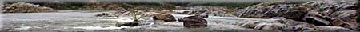
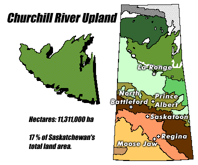
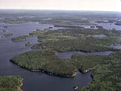
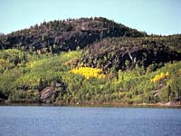
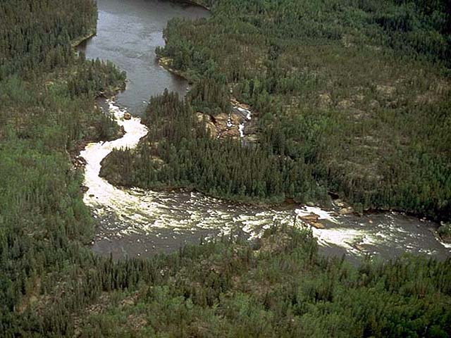
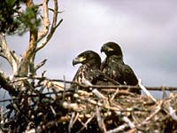
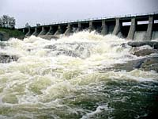

Climate
Landscape
Soil
Vegetation
Wildlife
Human Use
|
 |


|
Climate:
| Total annual precipitation (mm) |
528 |
| Annual snowfall (cm) |
177 |
| Water deficit (mm) |
124 |
| Mean July temperature (C) |
+16.0 |
| Mean January temperature (C) |
-24.0 |

The climate is cold, subhumid to humid.
| |
Landscape:

The Wollaston Lake - Lac la Ronge area consists of massive rocks
that form broad sloping uplands and lowlands. Any depression in
the bedrock has developed into a lake or wetland. The upland slopes
gently and drains eastward via the Churchill River which links
various sized lakes and rivers.
|
![[ V F T ]](../../media/stuff/vft_spin.gif)
GPS: 54d 43.77m N, 101d 55.13m W, 977 feet
15 July 96, 5:25 pm, Fuji Velvia 50, F9.5 1/30s
GPS: 56d 54.01m N, 108d 58.64m W, 1658 feet
06 July 96, 11:25 am, Fuji Velvia 50, F8 1/60s
GPS: 55d 36.18m N, 104d 46.24m W, 1167 feet
14 August 96, 12:45 pm, Fuji Velvia 50, F8 1/60-180s
GPS: 50d 47.43m N, 103d 59.14m W, 2733 feet
21 July 96, 6:45 pm, Fuji Velvia 50, F8 1/100s
GPS: 55d 28.16m N, 104d 51.40m W, 1453 feet
14 August 96, 1:30 pm, Fuji Velvia 50, F11 1/30s
GPS: 55d 26.11m N, 102d 26.68m W, 915 feet
15 July 96, 9:30 am, Fuji Velvia 50, F11 1/125s
GPS: 55d 25.06m N, 104d 33.59m W, 1233 feet
13 August 96, 6:30 pm, Fuji Velvia 50, F11 1/60s
Soil:

This is a land of Precambrian Shield outcrops and coarse soils. Bogs and fens occasionally have
permafrost which is more widespread in the northern part of this
ecoregion.
|
Vegetation:

Coniferous forests of medium to tall black spruce
and jack pine dominate this region. Black spruce is dominant
on a wide range of sites, along with Labrador tea, peat moss,
bog rosemary, leather leaf and bog cranberry. Jack pine occurs
with an understory of
lichen and blueberry in drier areas, feather moss and Labrador
tea in moist locations. The eastern portion of this ecoregion
is dominated by mixed stands of white spruce and aspen.
Poorly drained lowland areas are dominated by low black spruce
and larch with shrubs and feather mosses.
|
Wildlife:

The main inhabitants of the region are black bear, moose,
woodland caribou, waterfowl, colony nesting birds, bald
eagles and spruce grouse. There is also a great abundance and
variety of all fur bearers since the forest is very productive.
Beaver, red fox, fisher, lynx, wolf, coyote, red squirrel,
muskrat, river otter, short-tailed weasel, mink and marten all
occur in this ecoregion.
|
Human Use:

The most common uses of the land and resources include sport
and commercial fishing hunting, mining,
trapping, agriculture and rural
residences. The southern section of this ecoregion is used for
significant pulp wood and local saw log forestry. Power is generated
from the Churchill River at Sandy Bay where a dam was built in
1929 (shown left). The Churchill flow is controlled by the Whitesand dam built
in 1942 at the outlet of Reindeer Lake.
|
|
|